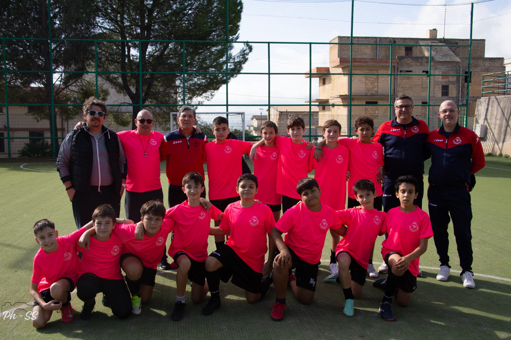
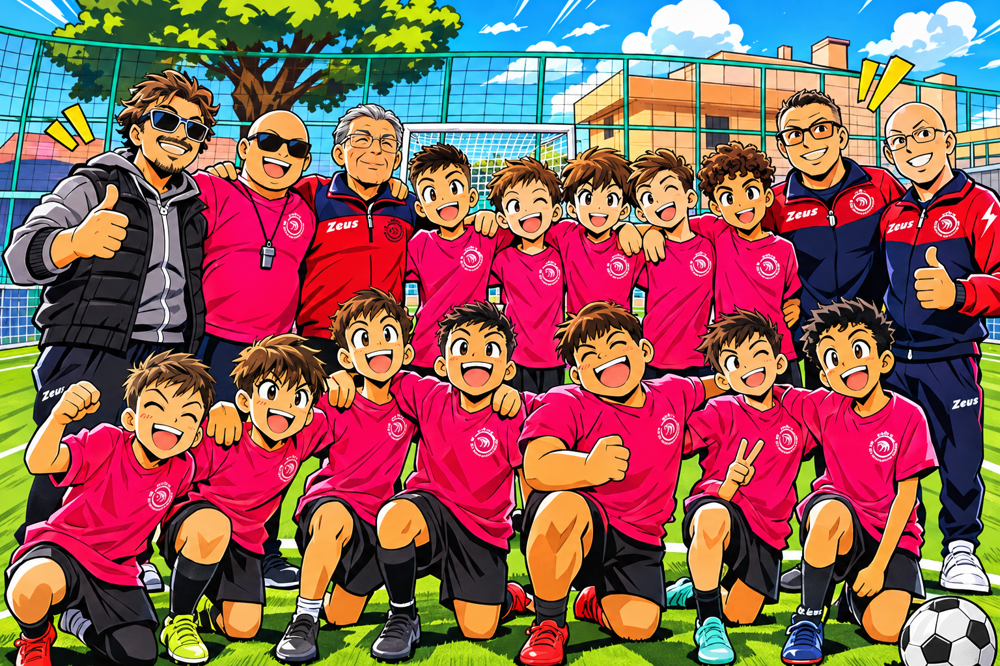

SETTORE GIOVANILE↗
01
La nostra forza sono i nostri ragazzi. Passione, amicizia e sport: cresciamo insieme, dentro e fuori dal campo.
Per noi il calcio è molto più di una partita: è un luogo dove imparare a stare insieme, affrontare le sfide, rispettare gli altri e divertirsi.
Ogni allenamento è un'occasione per crescere. Ogni ragazzo conta.
ENTRA IN CONTATTO ↗Dai primi calci alle sfide dei più grandi: una passione che cresce con loro.
Le categorie e le descrizioni sono una proposta iniziale da confermare prima della pubblicazione.
Seleziona una categoria per consultare le partite e i risultati pubblicati dalla società.
I testi delle notizie sono esempi dimostrativi; nessuna data o risultato inventato è pubblicato come reale.
LA NOSTRA FORZA
SONO I NOSTRI RAGAZZI.
Le immagini che raccontano il nostro gruppo.


Prima di rendere pubbliche le fotografie dei minori, verificare informative e autorizzazioni necessarie.
Vuoi conoscere le attività della società o chiedere informazioni? Scrivici attraverso i nostri canali ufficiali.
Le informazioni di contatto e i link social ufficiali saranno inseriti prima della pubblicazione.
CONTATTACI ↗Questo pulsante è dimostrativo e non invia ancora a un recapito ufficiale.